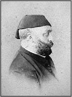

I. ABDÜLAZİZ (1830-1876)
“Bî-huzûram nâle-i murg-ı dil-i divaneden
Fark olunmaz cism-i bîmârum bozulmuş lâneden
Bunca derd ü mihnete katlandugum âyâ neden
Terk-i cân itsem de kurtulsam şu mihnethâneden”
Abdülaziz
I. Abdülaziz, 8 Şubat 1830 tarihinde doğmuştur. Babası II. Mahmud ve annesi Pertevniyal Sultan’dır. Abdülaziz, 25 Haziran 1861 tarihinde kardeşinin ölümü üzerine taht’a geçmiştir. Otuz İkinci Osmanlı padişahıdır. Çeşitli kaynaklarda, sanat adamı olduğu ve şiirle de meşgul olduğu yazılmıştır.
Güreş, cirit ve av sporlarına meraklı olan Padişah’ın, tahtta kaldığı sürece en çok üzerinde çalıştığı konu, Osmanlı donanmasının modernizasyonu idi. Bu nedenle, o dönemlerde Avrupa devletlerinden alınan kredilerin çoğu bu konu için harcandı. Sayısı gün geçtikçe artan Osmanlı ordusunun askerlerine yetecek son model top ve tüfeklerin de sağlanması da Abdülaziz döneminde gerçekleşmiştir. Sultan Abdülaziz, hükümdarlığı süresince sık sık ülke içi ve ülke dışı temaslarda bulunmuş, Avrupa ülkelerine ziyaretler düzenlemiştir. Yavuz Sultan Selim’den sonra Mısır’ı ziyaret eden ilk ve tek Osmanlı Padişahı, Abdülaziz’dir.

Abdülaziz’in Abdullah Biraderler tarafından çekilen 1863 tarihli fotoğrafı
Abdülaziz Avrupa seyahatinde (1867)
1867 yılında Paris’te açılan büyük bir sanat sergisine, III. Napolyon’un daveti üzerine katılan Abdülaziz, sergiden sonra İmparator ile temaslarda bulunmuş, İngiltere, Belçika, Almanya, Avusturya-Macaristan gezilerinden sonra da geri dönmüştür. Ayrıca Richard Wagner’in “Bayreuth” operasına maddi yardım yapmış ve davet edilmiştir.
Seyahatlerinde İngiltere kraliçesi Victoria, Belçika kralı II. Leopold, Prusya kralı I. Wilhelm, Avusturya-Macaristan imparatoru François-Josef ve Romanya Prensi I. Karol ile görüşmüştür.
Abdülaziz döneminde, Batı’yla iyi ilişkiler kurulmasına özellikle dikkat edildi. Tanzimat Fermanı ile Osmanlı’nın girdiği Batılılaşma süreci, bu dönemde de devam etti. Ülke genelinde yeni vilayetler ilan edildi ve İstanbul Üniversitesi, Fransız Eğitim sistemi örnek alınarak tekrar düzenlendi. Doğu Ekspresi’nin bir durağı olan Sirkeci Garı’nın temelleri, Abdülaziz döneminde atılmıştır.
Abdülaziz’in 15 senelik hükümdarlığı boyunca yaptığı diğer bazı önemli yenilikler şunlardır:
- Yeni asker üniformaları hazırlandı.
- İlk kez posta pulu kullanıldı.
- Sahillere deniz fenerleri inşa edildi.
- Osmanlı Bankası açıldı.
- Bugünkü Sayıştay ve Danıştay seviyesinde kurumlar oluşturuldu.
- Lise ve sanayi okulları açıldı.
- Orman madencilik ve tıp okulları açıldı.
- İtfaiye teşkilatı kuruldu.
Döneminde yaşanan önemli olaylar arasında Balkan isyanları vardır. Karadağ isyanı da Abdülaziz Dönemi içerisinde olmuştur. Karadağ harekâtı yapılmış, ancak sorun küçüleceği yerde büyümeye devam etmiştir. 1861-1866 tarihlerinde gerçekleşen Eflak- Boğdan olayları, Romanya’nın doğuşunu hızlandırmıştır. 1862-1867 tarihleri arasındaki Sırbistan olayları ise, Türk askerinin Sırbistan’dan çekilmesi ile sonuçlanmıştır.
Sultan Abdülaziz’in hükümdarlığının son yılları ise, 1875-76 yılındaki Hersek İsyanı ile 1867’de başlayan ve 1876’da iyice yayılan Bulgar İsyanları ile mücadele ederek geçti. Bu büyük Padişah, 30 Mayıs 1876 tarihinde gerçekleşen bir darbe ile indirilmiştir. Gözaltında olduğu Feriye Sarayları’nda, 4 Haziran 1876 tarihinde bilekleri kesilmiş olarak ölü bulundu. İntihar etmiş olduğu söylense de son bulgular, öldürülmüş olabileceği yönünde kanıtlar vermiştir.
EŞLERİ
1- Dürr-i Nev Baş Kadınefendi
2- Hayran-î-Dil İkinci Kadınefendi
3- Eda-Dil İkinci Kadınefendi
4- Neş’erek (Nesrin) Üçüncü Kadınefendi
5- Gevheri Dördüncü Kadınefendi
6- Yıldız (Gözde)
GÖZDELERİ
Çeşmidil Hanımefendi
ERKEK ÇOCUKLARI
1- Abdülmecid
2- Yusuf İzzettin Efendi
3- Mahmud Celaleddin Efendi
4- Mehmed Selim Efendi
5- Mehmed Seyfeddin Efendi
6- Mehmed Şevket Efendi
KIZ ÇOCUKLARI
1- Nazime Sultan
2- Esma Sultan
3- Emine Sultan
4- Saliha Sultan
5- Emine Sultan
6- Fatma Sultan
7- Münire Sultan